Operatör
Ekskavatör ve damperli kamyonla çalıştığın çevrimdışı şantiye simülatörü. 10 kariyer sözleşmesi ve 8 adımlı operatör eğitimi.
Destek
İletişim: booem3d@gmail.com. Sorun bildirirken cihaz modelini, işletim sistemi sürümünü ve sorunun hangi adımda oluştuğunu yazabilirsin. Şifre veya ödeme bilgisi gönderme.
Kontrolleri öğrenmek için ana menüden Operatör eğitimi bölümünü aç. Performans için Ayarlar menüsünden görüntü kalitesini düşürebilirsin. Oyun ilerlemesi cihazında otomatik kaydedilir.
Gizlilik politikası
Son güncelleme: 25 Eylül 2026 · Geliştirici: Mehmet Geçkil / booem3d
Operatör hesap oluşturmayı gerektirmez ve çevrimdışı oynanabilir. Oyun geliştiriciye kişisel veri, konum, rehber, fotoğraf, mikrofon veya kamera verisi göndermez. Reklam, analiz SDK’sı, sosyal sohbet ve uygulama içi gerçek para satın alma bulunmaz.
Görev ilerlemesi, sanal bakiye, makine durumu ve ayarlar yalnızca cihazdaki yerel kayıtta tutulur. Uygulama verilerini cihaz ayarlarından temizlemek yerel ilerlemeyi siler. İşletim sisteminin ve uygulama mağazasının yedekleme veya teşhis hizmetleri kendi ayar ve gizlilik politikalarına tabidir.
Destek için e-posta gönderirsen e-posta adresin ve kendi paylaştığın bilgiler yalnızca talebini yanıtlamak ve çözmek için kullanılır. Gereksiz kişisel bilgi istemeyiz. Destek yazışmalarının silinmesini aynı adresten talep edebilirsin; yasal saklama gereklilikleri varsa sana bilgi verilir.
Bu destek sitesi GitHub Pages üzerinde barındırılır; ziyaret sırasında barındırma sağlayıcısı standart bağlantı bilgilerini işleyebilir. Ayrıntılar GitHub gizlilik bildiriminde yer alır. Bu sayfada analiz veya reklam betiği yoktur.
Gizlilik soruları ve silme talepleri: booem3d@gmail.com.